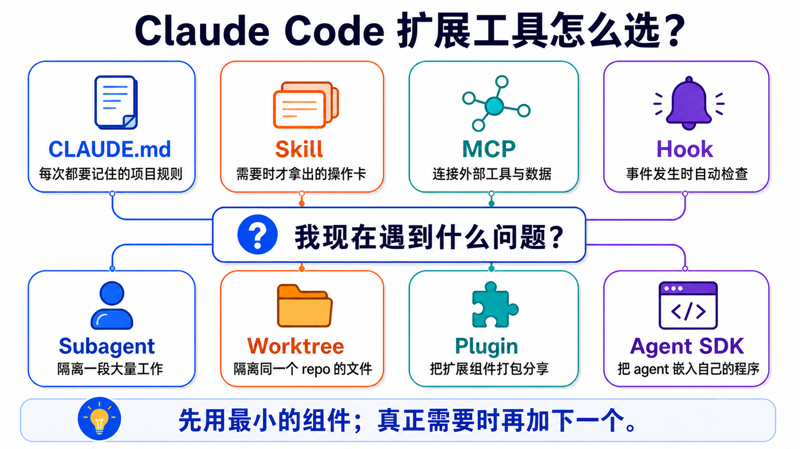
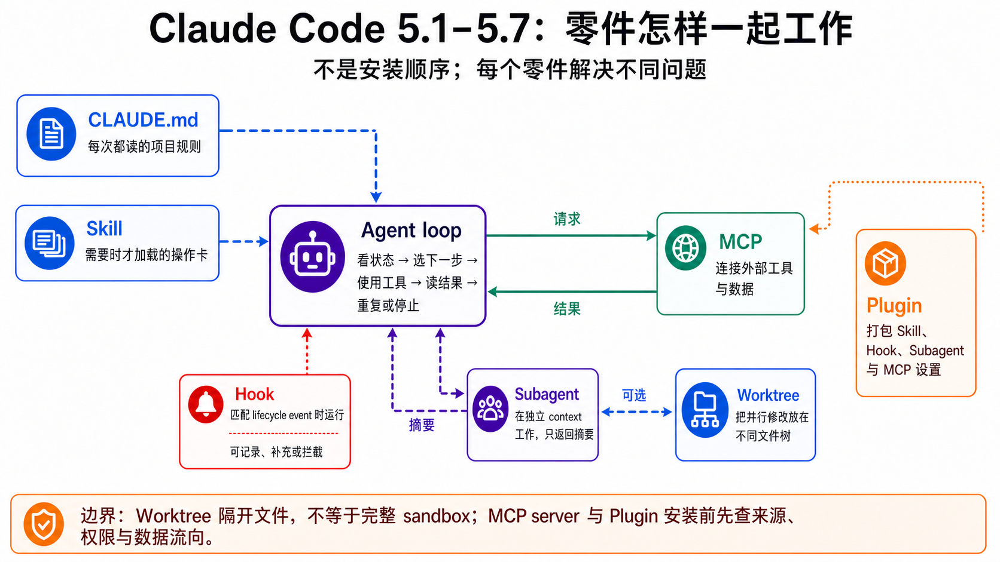

原课程本地核对资料，保留原内容与顺序。外链已改为本地阅读入口。命令中的原仓库路径请按本课运行指南换成实际位置；版本差异见本课说明。MIT © 2026 Wenyu Chiou。
Stage 5 — Claude Code 生态系统 ⭐⭐
Claude Code 是一位会使用文件和终端的助手。本章教你如何为它设置规则、工具和安全边界，而不是让你一次装完所有东西。
📌 学习目标
完成本章后，你可以：
- 说明 CLAUDE.md、Skill、MCP、Hook、Plugin 和 Subagent 分别做什么。
- 先选择最小的组件，不为“看起来厉害”而把简单任务复杂化。
- 做出一套可共享、可检查、默认安全的 Claude Code 项目配置。
- 知道何时只用 Claude Code，何时才需要 Worktree 或 Claude Agent SDK。
🧩 先认识核心术语
Claude Code
它是能读写文件并执行命令的编码代理。它像坐在终端旁的助手；本章教你约束它，而不是一次开放所有权限。
CLAUDE.md
它是每次工作都要读取的项目守则，适合写测试命令、命名规范和禁止事项。
Skill（SKILL.md）
它是需要时才拿出来的操作卡，适合部署、审查和数据处理等可重复流程。
MCP（Model Context Protocol）
它是让编码代理连接外部工具和数据的通用接口。连上 GitHub、数据库或浏览器后，代理才能实际使用这些服务。
Hook
它是在事件发生时自动执行的检查。例如 Claude 要运行危险命令前，Hook 可以先拦截。
Plugin 与 Marketplace
Plugin 把 Skills、Hooks、Subagents 或 MCP 配置打包成一盒；Marketplace 是摆放许多盒子的目录。前者像应用，后者像应用商店。
Subagent
它是拥有独立 context window 的小助手。大量中间内容留在它那里，最后只把结论带回主对话。
Worktree
它是同一 Git 仓库的另一个工作目录。多个代理同时改文件时，它能避免彼此踩到同一份未提交内容。
Claude Agent SDK
它让你的 Python 或 TypeScript 程序控制代理。只有要把代理嵌入产品或服务时才需要它。

一张表先选对组件
| 你的问题 | 先用什么 | 先不要做什么 |
|---|---|---|
| 每次都要记住同一条项目规则 | CLAUDE.md |
把整本手册塞进去 |
| 只在特定场景需要一套流程 | Skill | 每次都粘贴同一大段 prompt |
| 要连接 GitHub、数据库或浏览器 | MCP | 直接把未审查 server 接到高权限账户 |
| 事件发生时都要自动检查 | Hook | 把陌生 shell script 当作安全工具 |
| 大量搜索会挤满当前对话 | Subagent | 为一个小问题多开代理 |
| 多项工作会修改同一仓库 | Worktree | 让多个代理共享未提交文件 |
| 要与团队共享配置 | Plugin | 第一题就自建 marketplace |
| 要把代理嵌进产品 | Agent SDK | 把 CLI 已能完成的工作重写成服务 |
想分清 OpenRouter、Pi、OpenCode 和 Ollama？OpenRouter 是 Router，Ollama 是 本地运行时，Claude Code、OpenCode 和 Pi 是 编码代理／harness。完整选择表见 Track A1。
🚪 进入条件与阅读路径
- Track A（CLI 用户）：完成 A2 后读 5.1–5.4，掌握项目守则、Skill、MCP 和 Plugin，再前往 A3。
- Track B（代理开发者）：完成 Stage 3 和 Stage 4 后，再读 5.5–5.8。
⏱ 开始前：时间、环境、认证与费用
- 时间：主线约 6–10 小时；完成全部选读和项目约 15–25 小时。
- 环境：Git、终端，以及一个不含敏感数据的练习仓库。
- 认证：Claude Code 可使用 Anthropic 账户/API，也有 Amazon Bedrock、Google Vertex AI 和 Microsoft Foundry 的官方路径；它不是任意本地模型的通用前端。
- 费用：先做不调用模型的文件与配置检查；真正运行 Claude Code 前查看
/cost或账户用量，不要猜测每项练习的固定费用。 - 安全：第一轮只用示例仓库、只读 MCP 和最小权限；不要放入生产 token、SSH key 或真实客户数据。
📚 必修阅读
开始前只看两个入口：Claude Code quickstart 帮你安装并打开第一个会话；How Claude remembers your project 帮你编写练习 1 使用的 CLAUDE.md。其他文档等遇到对应术语时再查，不必一次读完。
- Claude Code quickstart — 安装与第一个会话。
- Extend Claude Code — 一张官方表区分 CLAUDE.md、Skill、MCP、Hook、Plugin 和 Subagent。
- How Claude remembers your project —
CLAUDE.md、Rules 和 auto memory 的边界。 - Skills — 旧
.claude/commands/仍兼容；新教程先用SKILL.md。 - MCP specification — 查协议时看带日期的版本。
- Hooks reference — 事件、输入输出和拦截规则。
- Plugins — 打包与共享扩展。
- Subagents、parallel agents 与 Dynamic workflows — 隔离、协作与大规模脚本编排。
- Agent SDK overview — 仅在要嵌入程序时再读。
🛠 动手练习
主项目是一个“安全的 Claude Code 练习仓库”。每题只添加一个组件；前一题成功后再做下一题。
练习 1：写一张最小项目守则
完成后，你会有一份短 CLAUDE.md，其中只有用途、禁止事项、验证命令和交付格式。
请先阅读这个仓库，只回复：用途、最重要的 3 个目录，以及你会先运行哪个只读检查。不要修改文件。
展开练习 1 的步骤与检查
- 在不含敏感数据的练习仓库根目录创建
CLAUDE.md。 - 只写四部分：
Purpose、Do not、Verify、Deliver。 - 先人工阅读一遍，再请 Claude 按上面的 prompt 说明它理解到什么。
- 成功条件：Claude 没有改文件，且它说出的验证命令与
CLAUDE.md一致。
CLAUDE.md 最好少于 200 行。@path import 可以整理文件，但被 import 的内容仍会进入 context；需要按路径延后加载时，使用 .claude/rules/ 的 paths frontmatter。
练习 2：把重复流程做成 Skill
完成后，你可以输入一条简短需求，让 Claude 按固定清单检查 README。
New-Item -ItemType Directory -Force .claude\skills\readme-check
展开练习 2 的步骤、macOS/Linux 命令与示例
创建 .claude/skills/readme-check/SKILL.md：
---
name: readme-check
description: Check a README for a clear purpose, install steps, one example, and a license link. Use when the user asks to review README onboarding.
disable-model-invocation: true
---
1. Read the README without changing it.
2. Check: purpose, install steps, one runnable example, license link.
3. Return PASS or a short list of missing items with line references.
macOS/Linux：
mkdir -p .claude/skills/readme-check
先人工检查 YAML frontmatter，再在 Claude Code 输入 /readme-check。disable-model-invocation: true 表示只有你能主动调用它，适合有副作用或需要控制时机的流程。
本仓库的完整 meta-example：examples/stage-5/tool-calling-tutor/。
练习 3：添加一个只观察、不拦截的 Hook
完成后，每次 Claude 想写文件或改文件时，Hook 都会记录 event 名称和 tool 名称；它不保存 prompt，也不替你批准或拦截操作。
New-Item -ItemType Directory -Force .claude/hooks
展开练习 3：直接复制 Hook、配置与验证步骤
将下面内容保存为 .claude/hooks/log-tool.py：
import json
import sys
from datetime import datetime, timezone
from pathlib import Path
event = json.load(sys.stdin)
record = {
"checked_at": datetime.now(timezone.utc).isoformat(),
"hook_event_name": event.get("hook_event_name"),
"tool_name": event.get("tool_name"),
}
log_path = Path(__file__).with_name("events.jsonl")
with log_path.open("a", encoding="utf-8") as handle:
handle.write(json.dumps(record, ensure_ascii=False) + "\n")
如果示例仓库还没有 .claude/settings.json，直接创建：
{
"hooks": {
"PreToolUse": [
{
"matcher": "Edit|Write",
"hooks": [
{
"type": "command",
"command": "python",
"args": [
"${CLAUDE_PROJECT_DIR}/.claude/hooks/log-tool.py"
]
}
]
}
]
}
}
如果文件已存在，只把 PreToolUse 加入原有的 hooks，不要覆盖其他设置。将 .claude/hooks/events.jsonl 加入 .gitignore，避免提交本机操作日志。
先用假数据测试 script：
'{"hook_event_name":"PreToolUse","tool_name":"Write"}' | python .claude/hooks/log-tool.py
Get-Content .claude/hooks/events.jsonl
接着在 Claude Code 输入 /hooks，确认 PreToolUse 显示一个 Hook；再请 Claude 在示例仓库创建 hook-demo.txt。最后一行应包含 "hook_event_name": "PreToolUse" 和 "tool_name": "Write"。
- Hook 可以是 shell command、HTTP endpoint、prompt、agent 或 MCP tool；并非每种 event 都支持每种 handler。
PreToolUse的 exit code2可以拦截 tool call，但它对所有 event 的效果并不相同；应查官方 event matrix。- 本示例只记录 event 和 tool 名称，不保存完整 prompt、tool input、token 或秘密值；exit code
0表示不拦截。 - 成功条件：假数据测试和一次真实
Write都新增一行，且日志中没有 prompt 或文件内容。
练习 4：连接受限的 MCP server
先核对这个 MCP server 可操作的文件夹与工具。这些限制只管它；Claude 的其他工具仍按各自权限运行。
我要连接一个 filesystem MCP server。请先解释它能看到哪个目录、有哪些 tools、如何移除，然后等我批准；不要直接安装。
展开练习 4 与 MCP 2026 补充
- 创建一个只放虚构数据的文件夹。
- 按 Claude Code MCP 文档 添加 filesystem server，scope 只指向该文件夹。
- 先列出 tools，再读取一个假文件，最后移除 server。
- 成功条件：读取指定文件夹成功；请求读取外部路径时失败。
MCP 的三项核心抽象：Tools 是模型可调用的动作，Resources 是可读数据，Prompts 是 server 提供的 prompt 模板。多数入门 server 先使用 Tools。
2026-07-28 规范将核心改为 stateless request/response，移除 initialize/initialized 和 Mcp-Session-Id，并用 MRTR 处理需要补充信息的多轮请求。这是 SDK/server 作者才需深入的迁移内容；连接现成 server 的读者先确认 host 与 server 支持同一版本即可。
练习 5：用 Subagent 做只读检查
完成后，大量搜索会留在独立 context，主对话只收到摘要。
Use the Explore subagent to find where tests are documented. Read only. Return the three most useful file paths and one sentence for each.
展开练习 5 与自定义 Subagent 示例
Claude Code 内置的主要 Subagent 是 Explore、Plan 和 general-purpose。其他名称可能来自 plugin、组织设置或你自己的 .claude/agents/<name>.md，不要假设每台机器都有。
---
name: docs-finder
description: Find documentation related to a named feature and return file paths. Use for read-only documentation discovery.
tools: Read, Glob, Grep
model: haiku
---
Search only. Return up to five file paths with one-sentence reasons. Do not edit files or run shell commands.
Subagent 由现行 Agent tool 派遣。它有独立的 context 与权限设置，接收一份自足任务，最后向主对话交回摘要。小问题、需要频繁来回或高度共享 context 的工作，留在主对话更简单。
先看 5.1–5.7 怎样连在一起
这张图整理各组件的关系，不是安装顺序。先读上面的粗体定义，再用图找 context、动作、检查、隔离与打包的边界。

5.1 — Claude Code 基础
本节成果：你能安全开始工作，并知道“配置”与“指示”不是一回事。
展开 5.1：安装、CLAUDE.md、Skills 兼容层与配置位置
Claude Code 可在 CLI、Desktop、VS Code 与 JetBrains 等 surface 使用。它能操作文件和工具，但仍受 permission、sandbox、Hook 与组织策略限制；“能执行 shell”不等于“应授予全部权限”。
| Scope | 常见位置 | 适合放什么 |
|---|---|---|
| Managed | 操作系统的管理路径 | 组织策略 |
| User | ~/.claude/CLAUDE.md |
个人跨项目偏好 |
| Project | ./CLAUDE.md 或 ./.claude/CLAUDE.md |
团队共享规则 |
| Local | ./CLAUDE.local.md |
不提交 Git 的本地配置 |
.claude/rules/*.md 可按 paths 延后加载；.claude/skills/<name>/SKILL.md 是按需知识或流程。旧 .claude/commands/*.md 仍可生成 slash command，但新内容优先教 Skills。
常用入口以现行 Commands reference 为准。第一次只记 /help、/model、/permissions、/memory、/agents 与 /cost；功能会更新，不要把固定“十大命令”当长期标准。
5.2 — MCP（Model Context Protocol）基础
本节成果：你能用“通用插座”解释 MCP，也能说出 Tool Use 与 MCP 的区别。
展开 5.2：Tools、Resources、Prompts、版本与安全
- Tool Use：模型提出结构化调用，由程序或 host 执行。
- MCP：把工具、数据与 prompt 的交换方式做成跨 host 协议。
- Skill：教代理何时、如何使用能力；它不会凭空建立外部连接。
- Plugin：把 Skill、Hook、Subagent、MCP 配置等打包共享。
官方 modelcontextprotocol/servers 是 reference implementations，不等于 production-ready server。连接第三方 server 前要检查来源、权限、数据流向和移除方式；tool result 也是不可信输入，不能直接当作高权限指令。
2026-07-28 是当前查核到的正式规范版本。它采用 stateless core、header routing、MRTR 与 extensions framework；旧功能至少有 12 个月 deprecation window。不要把 2025 的初始化流程直接粘到新 server。
5.3 — Skills：按需操作卡
本节成果：你能写出短小、可触发、可验证的 SKILL.md。
展开 5.3：frontmatter、加载、prompt 设计与 eval
Skill 的 description 像索引卡标题：应写清“何时使用”，不能只写漂亮的功能介绍。Skill body 默认按需加载；Supporting files 可放在 references/、scripts/ 等目录。
disable-model-invocation: true：只能由用户主动调用，适合 deploy、commit 或有外部副作用的流程。user-invocable: false：不作为用户 slash command，但 Claude 仍可在适当场景使用。
可直接复制的审查 prompt：
请检查这份 SKILL.md：
1. description 是否写清“何时使用”与“何时不用”？
2. 主文件是否只留必要流程，细节是否移到 references/？
3. 每一步是否有可验证的成功条件？
4. 有副作用的流程是否禁止 model 自动触发？
5. 相对链接、脚本和示例是否真的存在？
请逐项回复 PASS/FAIL、证据位置与最小修正；不要直接覆盖文件。
现行 Skills 遵循开放 Agent Skills 标准；Claude Code 另加 invocation control、Subagent execution 与 dynamic context。跨工具共用时，内容核心可以相同，但目录、frontmatter、权限和工具名必须分别验证。
5.4 — Plugins 与 Marketplaces
本节成果：你能说明“Plugin 是一盒组件，Marketplace 是摆放许多盒子的目录”。
展开 5.4：plugin 结构、安装、共享与供应链安全
my-plugin/
├── .claude-plugin/plugin.json
├── skills/<name>/SKILL.md
├── agents/<name>.md
├── hooks/hooks.json
└── .mcp.json
实际 schema 以 Plugins reference 为准；现行组件还可包含 LSP servers 与 monitors。不要把教学用的最小树状图当完整 schema。
添加 Marketplace 只会让目录看见 Plugins，不代表全部已安装。安装前检查仓库、publisher、权限、Hook、MCP server、license 与更新方式；managed、project、local settings 的优先级和 consent 规则以官方配置文档为准。
5.5 — Subagents：隔离大段工作
本节成果：你能判断何时需要独立 context，并写出一份自足的 delegation brief。
展开 5.5：内置类型、Skill 差异、权限、费用与常见错误
| Skill | Subagent | |
|---|---|---|
| 核心用途 | 重用知识或流程 | 隔离一段工作 |
| Context | 通常在当前对话加载；也可设置 fork | 默认新建独立 context |
| 结果 | 改变 Claude 处理任务的方式 | 返回结果或摘要 |
| 适合 | 规则、参考资料、固定流程 | 大量搜索、并行分析、专业 worker |
自定义 Subagent 的 description 是路由提示，不是代码层的 if。prompt 应自足，明确任务、范围、工具、输出和停止条件。现行官方还支持 skills、mcpServers、permissions、hooks 与 isolation: worktree 等设置；只在确有需要时添加。
多开代理会增加 token、延迟与集成工作。不要声称固定倍数；应按任务、模型和用量记录实测。
15 个进阶可复制 recipe：resources/subagent-cookbook.zh-Hans.md。组合与排错：resources/subagent-advanced.zh-Hans.md。
5.6 — 并行工作与 Worktree
本节成果：你能分清“谁协调工作”与“谁隔离文件”。
展开 5.6：Subagent、agent view、agent teams、Dynamic workflows、Worktree 与 /batch
| 做法 | 谁协调 | 适合什么 | 当前状态／边界 |
|---|---|---|---|
| Subagent | 主对话 | 隔离搜索或专业任务 | 同一 session 内返回结果 |
| Agent view | 用户 | 监看多个独立后台 session | Research preview |
| Agent teams | Lead 与 teammates | Workers 要共享任务并互相传讯 | Experimental，默认关闭 |
| Dynamic workflows | 协调脚本／运行时 | 大型审计、迁移或交叉核验研究 | 可读、可重跑的 JavaScript 编排；会增加 token 用量 |
| Worktree | Git／用户 | 隔离同一仓库的文件修改 | 不负责代理通信 |
/batch |
Claude 规划后分派 | 5–30 个可切开的机械改动 | 每个 worker 都要独立范围与 review |
Worktree 解决“不要改同一份文件”；Subagent/team 解决“谁做哪件事”。两者可一起使用，但不是同一功能。Agent teams 不会自动为每个 teammate 建 Worktree，所以仍要清楚划分文件 ownership。
Dynamic workflows 会把计划放进可读的 JavaScript 脚本，而不是绑定到某个特定 Claude 模型；用 /workflows 查看进度。现行官方文件列出付费方案、API、Bedrock、Google Cloud Agent Platform 与 Foundry，但没有声明一个通用最低版本；Pro 需从 /config 的对应项目开启。
5.7 — 剖析 agent loop
本节成果：你能画出“读取 context → 模型决定 → 工具执行 → 结果返回 → 再决定”的 loop。
展开 5.7：官方 agent loop 阅读题
先读 How the agent loop works，再回答：
- 哪些数据在送给模型前进入 context？
- 模型提出 tool call 后，谁检查 permission？
- tool result 如何返回下一轮？
- loop 在成功、错误、拒绝或达到限制时如何停止？
- Hook、MCP、Skill 和 Subagent 分别插在什么位置？
把答案画成六格箭头图，再用 100–150 字比较 Stage 3 的最小 ReAct loop 增加了哪些控制边界。
anthropics/claude-agent-sdk-python 值得阅读，但它是 SDK client/wrapper，不是 Claude Code 完整 runtime source。可以查看 message types、transport、query options 与 error handling；不要因为 _internal/client.py 没有完整 LLM loop 就误以为漏看。
5.8 — Claude Agent SDK（选修）
本节成果：你能判断 CLI 已够用，还是确实需要把代理嵌入程序。
展开 5.8：Python quickstart、provider 与安全 hosting
需要 SDK 的情况：
- 用户不会打开终端，你要把代理放进自己的 App。
- 需要程序化输入输出、调度、审计、限额或多租户。
- 服务需要控制 allowed tools、session 与结果格式。
import asyncio
from claude_agent_sdk import AssistantMessage, ClaudeAgentOptions, TextBlock, query
async def main() -> None:
options = ClaudeAgentOptions(allowed_tools=["Read", "Glob"])
async for message in query(prompt="Summarize this project without editing files.", options=options):
if isinstance(message, AssistantMessage):
for block in message.content:
if isinstance(block, TextBlock):
print(block.text)
asyncio.run(main())
安装包是 claude-agent-sdk／@anthropic-ai/claude-agent-sdk；旧 claude-code-sdk 名称已经迁移。SDK 支持 Anthropic API，也有 Bedrock、Vertex AI 与 Foundry 的官方认证路径。
SDK 会执行命令并保存 session state，不能把它当普通 stateless text API。上线前应实施容器／sandbox、network control、credential isolation、resource limits、audit log 与人工批准；先读 Hosting 与 secure deployment 文档。
🎯 精选项目与学习资源
第一次只选一个与眼前练习相符的入口。五星是本学习地图的编辑建议，不是人气排行榜。
本章先做这个： tool-calling-tutor ⭐⭐⭐⭐⭐ — 它是仓库内可直接照着做的 Skill 示例。要查看 Claude Code 本身的版本与问题，再看 anthropics/claude-code ⭐⭐⭐⭐⭐。
资料查核：2026-08-29 UTC
| 主题 | 资源 | 评分 | 适合谁／读什么 |
|---|---|---|---|
| Claude Code 基础 | claude-code | ⭐⭐⭐⭐⭐ | 跟踪官方 releases、issues 与现行功能。 |
| Claude Code 官方文档 | ⭐⭐⭐⭐⭐ | 设置、权限与命令问题的第一来源。 | |
| awesome-claude-code | ⭐⭐⭐⭐ | 完成官方 quickstart 后探索社区扩展。 | |
| AI-Coding-Guide-Zh | ⭐⭐⭐⭐ | 适合想配合简体中文逐步导读的读者。 | |
| MCP | servers | ⭐⭐⭐⭐⭐ | 官方 reference implementations；用于读协议，不是生产保证。 |
| python-sdk | ⭐⭐⭐⭐⭐ | 用 Python 写 client/server，先对照现行 spec revision。 | |
| typescript-sdk | ⭐⭐⭐⭐ | TypeScript 路线的官方 SDK。 | |
| awesome-mcp-servers | ⭐⭐⭐⭐⭐ | 写 server 前先找现成选项；逐个审查 publisher 与权限。 | |
| awesome-mcp-servers | ⭐⭐⭐⭐ | 用不同分类交叉找 server；收录不是安全背书。 | |
| github-mcp-server | ⭐⭐⭐⭐ | 阅读大型官方 MCP server 的工具与权限设计。 | |
| magic-mcp | ⭐⭐⭐ | 生成 UI 的非平凡 MCP 案例；使用前另查 license 与维护状态。 | |
| repomix | ⭐⭐⭐⭐⭐ | 学习仓库打包、敏感数据过滤与 MCP mode 的边界。 | |
| Skills | skills | ⭐⭐⭐⭐⭐ | 官方模板、规范与文档处理 Skills；写自己的 Skill 前先读。 |
| claude-code | ⭐⭐⭐⭐ | 跟踪 Claude Code 对 Skills 的现行支持。 | |
| skills | ⭐⭐⭐⭐ | 观察短小、任务导向的社区 Skill 写法。 | |
| superpowers | ⭐⭐⭐⭐ | 学习 TDD、debugging 与 plan 类 Skills 的组合。 | |
| agents | ⭐⭐⭐⭐ | 看 Skills 与 Subagents 如何分工；不要照搬权限。 | |
| awesome-claude-skills | ⭐⭐⭐⭐ | 社区 Skill 入口，安装前逐项审查。 | |
| awesome-agent-skills | ⭐⭐⭐ | 比较多家工具对 Agent Skills 的兼容范围。 | |
| claude-skills | ⭐⭐⭐ | 寻找领域案例；当作案例库，不是官方标准。 | |
| Plugins／Marketplaces | claude-plugins-official | ⭐⭐⭐⭐⭐ | 官方 plugin 与 marketplace 结构的第一范本。 |
| knowledge-work-plugins | ⭐⭐⭐⭐⭐ | 看多领域 bundles 如何分工与打包。 | |
| superpowers-marketplace | ⭐⭐⭐⭐ | 学习只负责策展、plugin 放在外部仓库的最小 marketplace。 | |
| skills-curated | ⭐⭐⭐ | 观察 marketplace 如何加入人工安全审查与信任说明。 | |
| awesome-claude-code-toolkit | ⭐⭐⭐ | 探索 agents、skills、hooks 与 templates 的社区入口。 | |
| life-sciences | ⭐⭐⭐ | 读单领域 marketplace 的结构；内容偏生命科学。 | |
| claude-for-legal | ⭐⭐⭐⭐ | 看大型 vertical suite 的 Skills、Agents、MCP 与责任边界。 | |
| Subagents | claude-cookbooks | ⭐⭐⭐⭐⭐ | 阅读官方 tool-use 与 orchestration notebooks。 |
| agents | ⭐⭐⭐⭐⭐ | 看大量 agent 定义的命名与分工；先从少量文件开始。 | |
| superpowers | ⭐⭐⭐⭐ | 比较何时用 Skill、何时隔离成 worker。 | |
| claude-plugins-official | ⭐⭐⭐⭐ | 看 Plugin 如何打包 Agents。 | |
| Agent loop／SDK | claude-agent-sdk-python | ⭐⭐⭐⭐⭐ | Python SDK client、message types 与 options；不是完整 runtime source。 |
| harness-engineering-from-cc-to-ai-coding | ⭐⭐⭐⭐ | 中文 harness 解读；事实仍需与官方文档核对。 | |
| awesome-harness-engineering | ⭐⭐⭐⭐ | 扩展到 eval、memory、observability 与 runtime 资源。 | |
| agents | ⭐⭐⭐⭐ | 从实际 Agent 定义观察 harness 的可读性与权限表面。 |
✅ 进入下一站前的自我检查
你能否：
- [ ] 用一句话分清
CLAUDE.md、Skill、MCP、Hook、Plugin 和 Subagent？ - [ ] 完成至少前三题，且没有把陌生 script 或高权限 token 直接交给代理？
- [ ] 说明 Subagent 和 Worktree 解决的是两个不同问题？
- [ ] 说明 Claude Code、OpenRouter、OpenCode／Pi 与 Ollama 各是哪一类工具？
- [ ] 判断自己的需求是“使用 CLI”还是“确实需要 Agent SDK”？
如果可以，按你的路线前进：Track A 前往 A3 — 安全的团队流程；Track B 前往 Stage 6 — Memory & RAG。如果还不行，回到“一张表先选对组件”，只重做你分不清的那一行。